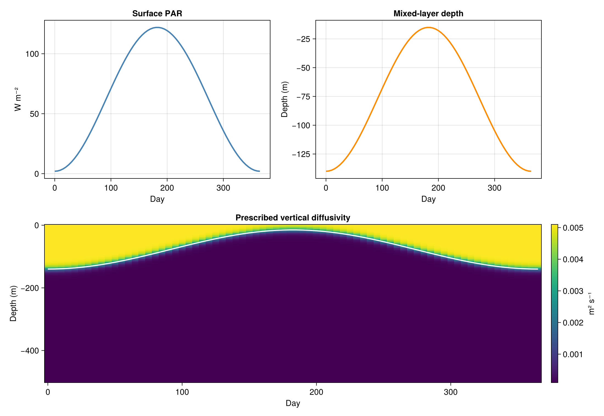

Appendix: physical forcing of the columns
The biological model evolves inside a prescribed physical environment. Light controls photosynthesis, and vertical mixing transports nutrients and plankton through the water column. This appendix makes those inputs inspectable alongside the biological experiments.
Current reference column: idealised seasonal forcing
The reference simulation uses a 500 m column with 100 uniform cells. Its annual forcing begins in midwinter and repeats every 365 days. The reference tutorial spans the complete annual cycle, including spring, summer, autumn and winter.

The figure shows three related physical inputs:
- Surface PAR: An idealised annual cycle, with a winter minimum and stronger illumination toward midsummer. The prescribed value is in W m⁻².
- Mixed-layer depth: A diagnostic transition from a roughly 140 m winter mixed layer toward a roughly 15 m summer layer.
- Vertical diffusivity: Stronger mixing above the mixed-layer base and weaker mixing below it. The white curve marks the prescribed mixed-layer depth in the time-depth diagram.
These are the same functions imported from MASTSWorkshop in the reference exercise: surface_PAR(t), mixed_layer_depth(t) and vertical_diffusivity(z, t). The water column uses the prescribed vertical diffusivity as its closure, and LOBSTER calculates the attenuation of PAR within the column.
Temperature and further physical variables
The initial idealised column uses light and vertical diffusivity to drive its biological and transport calculations. The station-specific exercises will add prepared temperature and other physical information as needed by the selected model configuration. Their units, temporal resolution and source datasets will be documented here.
Station columns: BATS, HOT, NABE and DYFAMED
When the station-specific forcing datasets are introduced, this appendix will compare their surface light, vertical mixing, mixed-layer depth and temperature on consistent time/depth axes. Each station will have the same set of plots, with its forcing source and units alongside them.
The intended contrasts include subtropical stratification at BATS, a weakly seasonal subtropical regime at HOT, a strong North Atlantic spring bloom setting at NABE, and seasonal mixing in the Mediterranean at DYFAMED. These are the regimes the station exercises will test using the prepared forcing.
Return to the reference column or continue with the grazing experiment.